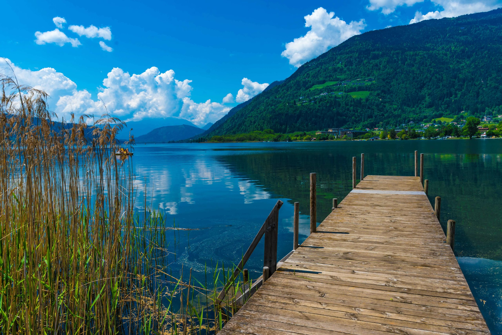

Ossiacher See
Der Ossiacher See ist der drittgrößte See Kärntens
und liegt südlich der Stadt Villach. Mit einer Fläche von etwa 10km² und einer maximalen Tiefe
von 52 Metern bietet er zahlreiche Möglichkeiten für Erholung und Freizeitgestaltung.
Öffentliche Badeplätze und freie Seezugänge
Entlang des Ossiacher Sees gibt es mehrere öffentliche Badeplätze
und freie Seezugänge, die den direkten Zugang zum Wasser ermöglichen.
Hier sind einige empfehlenswerte Stellen:
-
Seebad Bodensdorf: Dieses Seebad
bietet einen großen kostenfreien Seezugang und verfügt
über einen Abenteuer-Kinderspielplatz sowie eine Seeterrasse
mit einer Auswahl an Speisen und Getränken. Kostenpflichtige
Parkplätze stehen direkt vor dem Eingang zur Verfügung.
-
Seezugang bei der Ossiacher See Halle
in Steindorf: Ein unscheinbarer Zugang mit
Parkmöglichkeiten bei der Ossiacher See Halle. Ein
Schotterweg führt direkt zum Seeufer, wo Holzbänke zum Verweilen einladen.
-
"Mini-Strand" in Bodensdorf: Direkt nach dem Ortsende
von Bodensdorf befindet sich an der rechten Seite ein Trafohäuschen.
Nach rechts abbiegen und einem Pfad zwischen zwei Hecken folgen,
erreicht man nach etwa 130 Metern das Seeufer und den freien Seezugang.
-
Freier Seezugang bei der Surf- und Segelschule
Rainer: Bis zum 20. Juni 2024 gibt es hier
einen kostenlosen Zugang zum See, der täglich von 9 bis 19 Uhr
geöffnet ist. Umkleiden und Sanitäranlagen stehen zur Verfügung.
